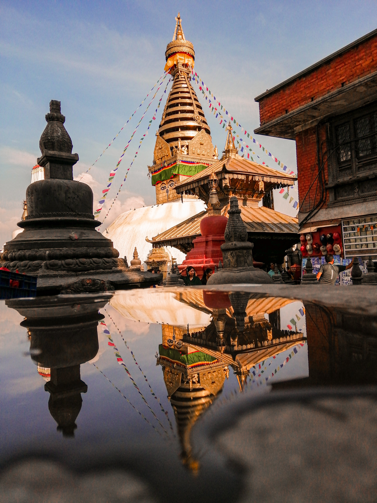
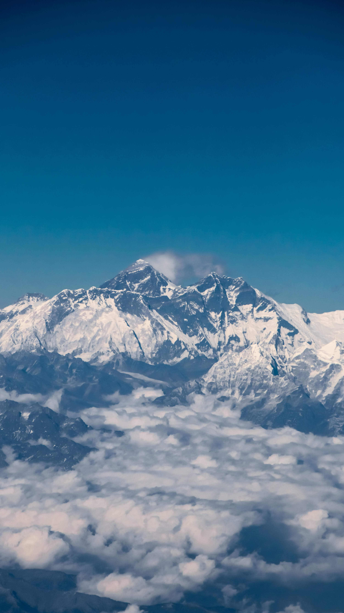
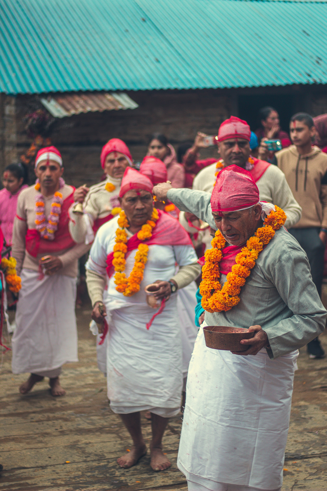

Photo Gallery

- 
- 
- 

Welcome visitors to celebrate the year 2020 which is chosen as national tourism year of Nepal after the year 2011 which was the primary authority tourism year of new Federal Democratic Republic of Nepal. The government and tourism department of Nepal authoritatively reported that Nepal will take year 2020 as "Visit Nepal 2020", a year committed to tourism industry of Nepal with vision of making a reasonable brand picture of Nepal as travel and vacationer destination, backing up the tourism foundations of Nepal, enhance the growth of tourism industry, and enhance locale tourism as supportable industry. The legislature has wanted to accommodate more than one million visitors amid the year of “Visit Nepal 2020”. The government has formally initiated the open connection program for Visit Nepal Year 2020 for the arrangements and approach starting from the year 2016/2017 to reinforce and give a decent foundation for the year 2020.